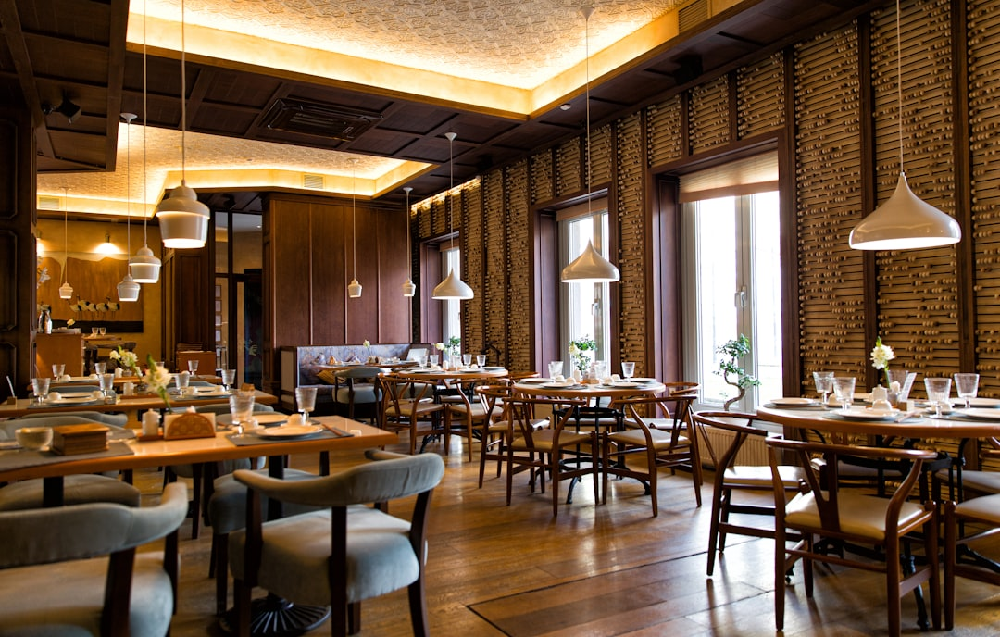

Rivoluziona il Menu e la Comunicazione del Tuo Locale con Smart Experience / Taste Engine

Innovazione Digitale per Ristoratori e Titolari Ho.Re.Ca: Come Migliorare il Menu e la Customer Experience
- I menu tradizionali in PDF limitano la chiarezza e l'interazione, incidendo negativamente sull’esperienza cliente.
- La difficoltà del personale nel fornire spiegazioni dettagliate rallenta il servizio e genera insoddisfazione.
- Smart Experience / Taste Engine offre un e-menu interattivo con Maître Virtuale AI, abbinamento vini e storytelling, semplificando la comunicazione e migliorando il fatturato.
Analisi Approfondita della Notizia e Implicazioni Operative
Nel settore Ho.Re.Ca., la trasformazione digitale impone una revisione completa dell’esperienza cliente, in particolare nella presentazione del menu e nella comunicazione del valore dei piatti. I tradizionali menu in PDF, spesso caratterizzati da immagini sgranate e dati incompleti sugli allergeni, limitano fortemente le possibilità di valorizzare l’offerta culinaria. Inoltre, nelle ore di punta, il personale di sala è oberato, riducendo la possibilità di fornire spiegazioni esaustive su ogni piatto o di suggerire abbinamenti ottimali.
Questa situazione rischia di penalizzare fortemente non solo la soddisfazione del cliente, ma anche il potenziale di upselling attraverso l’abbinamento di vini o la promozione di piatti speciali. La mancanza di strumenti adeguati per una comunicazione efficace è ormai un limite operativo evidente e sempre più criticato in un mercato altamente competitivo.
Le Conseguenze e i Costi di Non Agire
Continuare a utilizzare menu PDF statici e affidarsi esclusivamente al personale per spiegazioni dettagliate si traduce in molteplici svantaggi economici e organizzativi. Prima di tutto, l’esperienza dell’ospite risulta compromessa: menu difficili da leggere o non aggiornati generano confusione, insicurezza sugli ingredienti e rallentano la decisione d’acquisto.
Il personale di sala, spesso impegnato in molteplici compiti simultanei, non ha tempo né risorse per educare ogni cliente sugli allergeni o sul valore aggiunto dei piatti. Questo crea un collo di bottiglia che si riflette in rallentamenti del servizio, maggior rischio di errori e talvolta in recensioni negative, con conseguente perdita di clienti e di fatturato potenziale.
Infine, l’assenza di strumenti digitali integrati rende impossibile raccogliere dati rilevanti sul comportamento e le preferenze dei clienti, impedendo decisioni strategiche informate per ottimizzare l’offerta e la comunicazione.
Come Smart Experience / Taste Engine Risolve il Problema
Smart Experience / Taste Engine, il SaaS sviluppato da RM Studio, porta una soluzione all’avanguardia nel mondo Ho.Re.Ca. attraverso un e-menu interattivo e intelligente, pensato per ristoratori, chef e titolari di locali che vogliono elevare la qualità del servizio e dell’esperienza cliente senza aumentare il carico di lavoro del personale.
La piattaforma integra un Maître Virtuale AI con interfaccia stile WhatsApp, che guida l’ospite nella scoperta del menu, spiega dettagliatamente i piatti e fornisce informazioni sugli allergeni in modo immediato e chiaro. Inoltre, il sistema suggerisce abbinamenti di vini selezionati da un Sommelier virtuale, offrendo un’esperienza di degustazione completa e personalizzata.
Non solo testo, ma anche storytelling multimediale con video e fotografie dell’atmosfera del locale: il cliente vive un’esperienza immersiva che stimola il desiderio di provare ogni piatto, aumentando naturalmente il valore medio dello scontrino.
Smart Experience si configura come un investimento semplice e sostenibile grazie allo sblocco una tantum di €390,00 senza costi ricorrenti, e include un jingle promozionale personalizzato per il locale, utile a rafforzare l’identità di brand e l’engagement con i clienti.
| Gestione Tradizionale | Con Smart Experience / Taste Engine |
|---|---|
| Menu PDF statici, spesso sgranati e legibili con difficoltà | E-menu interattivo e di alta qualità visiva, fruibile da smartphone e tablet |
| Personale sopraffatto incapace di spiegare piatti e allergeni dettagliatamente | Maître Virtuale AI che assiste il cliente in tempo reale, riducendo il carico di lavoro |
| Mancanza di suggerimenti abbinamento vini e upselling | Sommelier virtuale integrato per abbinamenti personalizzati e aumento dello scontrino medio |
| Assenza di storytelling e contenuti multimediali | Video e narrazioni per emozionare e coinvolgere il cliente |
| Costi ricorrenti elevati e aggiornamenti laboriosi | Soluzione semplice, sblocco una tantum con aggiornamenti inclusi e senza abbonamenti |
💡 Ti è stato utile questo approfondimento?
Condividilo con un collega o un amico del settore Ristoratori, Chef, Titolari di Locali e Attività Ho.Re.Ca. a cui potrebbe interessare!
FAQ - Domande Frequenti per i Professionisti Ho.Re.Ca.
1. Quanto tempo necessita il personale per imparare a utilizzare Smart Experience / Taste Engine?
L’interfaccia è studiata per essere intuitiva e non richiede competenze tecniche: alcune ore di formazione sono sufficienti per massimizzare i benefici operativi.
2. Il sistema funziona su qualsiasi dispositivo digitale?
Sì, l’e-menu è compatibile con smartphone, tablet e PC senza necessità di download, garantendo accessibilità immediata ai clienti.
3. Come viene gestito l’aggiornamento dei contenuti e dei menu?
Grazie a un pannello di controllo semplice, il titolare può aggiornare in tempo reale piatti, allergeni e video, senza costi aggiuntivi.
Inizia Subito
Sblocco una tantum a €390.00 senza abbonamenti con Jingle promozionale incluso.
Fonti Ufficiali e Risorse Esterne
Scopri l'Intelligenza Artificiale per la tua attività
Ottimizza i processi e aumenta le vendite con le soluzioni B2B di RM Studio.
Scopri Smart Experience / Taste Engine